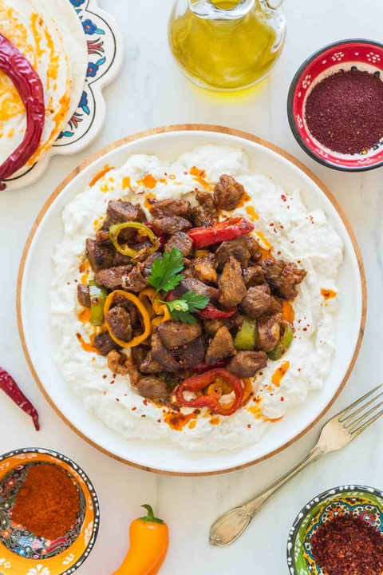

INGREDIENTS
- 500g lamb chunks/cubes
- 2 tablespoons olive oil
- 1 leave of Daphne (Bay leaf)
- Salt
- Black pepper
- ½ tablespoon tomato paste
- ½ tablespoon powdered red pepper
- ½ tablespoon powdered hot pepper
- 3 coloured peppers
- 2 bell eggplants or 3 eggplants
- 2 tablespoons labneh
- 3 tablespoons yoghurt
- salt
- 2 cloves of garlic, crushed and peeled
- 2 tablespoons butter, melted
- ½ tablespoon red pepper
LAMB
EGGPLANT & YOGHURT MIXTURE
SPICED BUTTER

PREPARATION
- Preheat the oven to 450 degrees F.
- Pierce the eggplants with a knife and place on a baking tray. Bake on the grill setting of the oven for 20-25 minutes turning occasionally.
- Cut the roasted eggplants in half. Separate the seeds and shells (you can discard these bits, bestie) from the fleshy insides. If there is juice remaining, you’ll want to drain it using a colander. Set aside.
- Mix the melted butter and ground red pepper. Easy peasy.
- Place the eggplant insides in a large bowl, and mix together with the labneh, yoghurt, salt, and crushed garlic.
- To serve: First, spread the yoghurt-eggplant mixture on to a serving plate and then add the cooked lamb on top. Drizzle with the spiced butter to take your flavour-receptors to the moon.